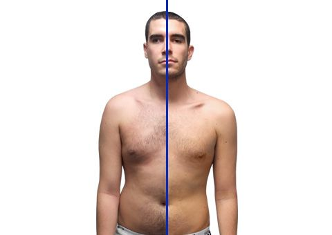
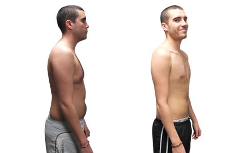
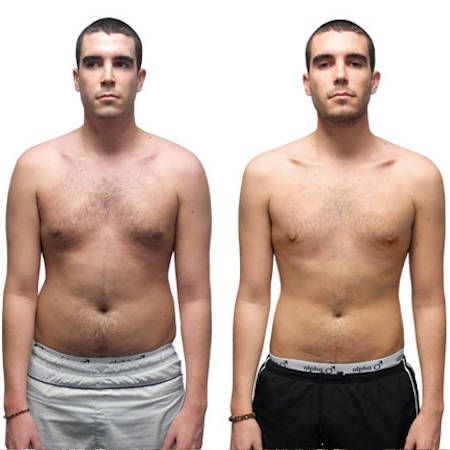

 I started training with Mike in October with an intention to lose my excess fat and gain muscle. He gave me all the advice I needed to change my diet and live a healthy active lifestyle. The information on his website was also a really useful resource and the recipes were great. I especially liked the smoothies as they were not only useful as a weight loss tool, but they tasted fantastic!  Training with Mike has improved my mental well-being as well as physical. Aside from being more confident, I have found myself to be more focused and attentive, especially with my studies at university. I am now more focused and organised when it comes to my workload and the training has really helped with work related stress levels. Since training with mike my grades at university have improved which is definitely a great side effect of the training!
Quote “I was shocked that I lost 1.5 stone in only 6 weeks”
The exercise plans Mike drew up for me were really easy to follow and he took the time to explain every exercise thoroughly and ensure I had the correct technique. Mike has always offered around-the-clock support and encourages me to contact him whenever I have any questions. This made me feel a lot more motivated!  One of my worries when signing up for training sessions was my ability to lift weights due to a previous hand injury compromising the dexterity in my left hand. Mike assisted me massively with this and researched additional exercise aids for me to use in the gym.
Quote “The amount of weight I lost reflects how effective Mike’s techniques really are!”
Mike is a great personal trainer, very knowledgeable, easy to talk to, fun to train with and always pushes you to achieve your goals. The amount of weight I lost reflects how effective Mike’s training style really is! Because of Mike I always leave the gym with aching muscles knowing I’m one stop closer to my goal!
Steve Dunkley Nurse